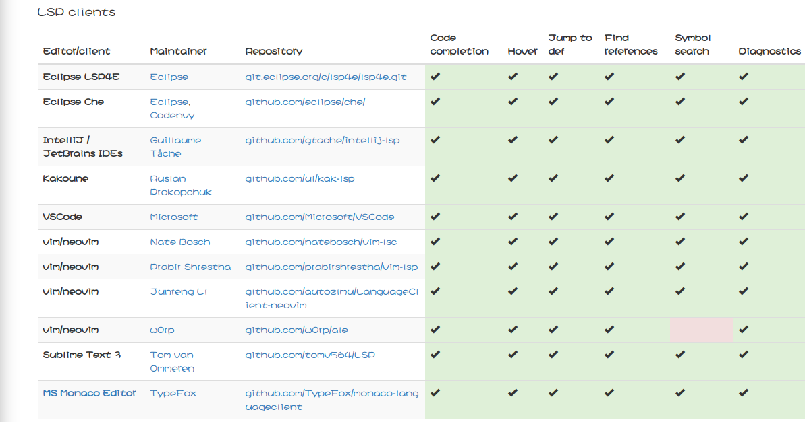
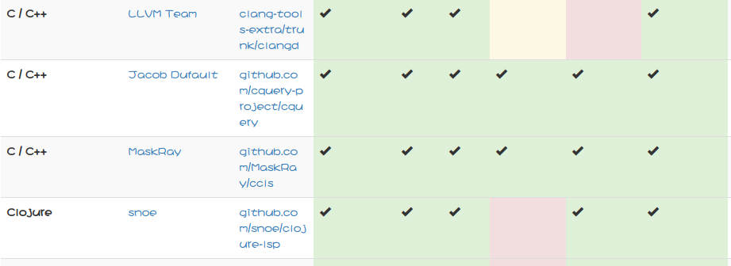

LSP 是一套通信协议，遵从 LSP 规范的客户端（各种编辑器/IDE）可以通过众多 LSP 服务端按协议标准进行通信，由客户端完成用户界面相关的事情，由服务端提编程语言相关的：补全，定义引用查找，诊断，帮助文档，重构等服务。
客户端安装

LSP官网给出了目前可用的客户端实现，我们看到vim的客户端有三个，这里我选择了star数最高的ale
在.vimrc中添加
1 | Plugin 'w0rp/ale' |
然后vim执行
1 | PluginInstall |
服务端安装

我选择的是cquery
根据官网的步骤编译
1 | git clone https://github.com/cquery-project/cquery.git --recursive |
不过执行cmake .. -DCMAKE_BUILD_TYPE=Release -DCMAKE_INSTALL_PREFIX=release -DCMAKE_EXPORT_COMPILE_COMMANDS=YES
时报错：
error while loading shared libraries: libtinfo.so.5: cannot open shared object file: No such file or directory
执行
1 | ls -l /usr/bin | grep libtinfo |
解决方案
1 | sudo pacman -S ncurses5-compat-libs |
然后执行
1 | cmake .. -DCMAKE_BUILD_TYPE=Release -DCMAKE_INSTALL_PREFIX=release -DCMAKE_EXPORT_COMPILE_COMMANDS=YES -DSYSTEM_CLANG=ON |
参数-DSYSTEM_CLANG=ON的意思是使用系统的clang，尽管这是作者不推荐的。
在主目录添加.cquery
1 | clang |